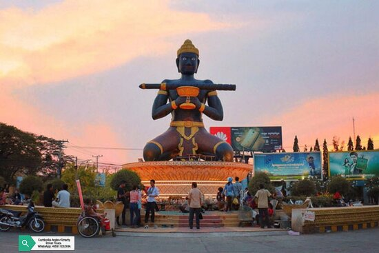
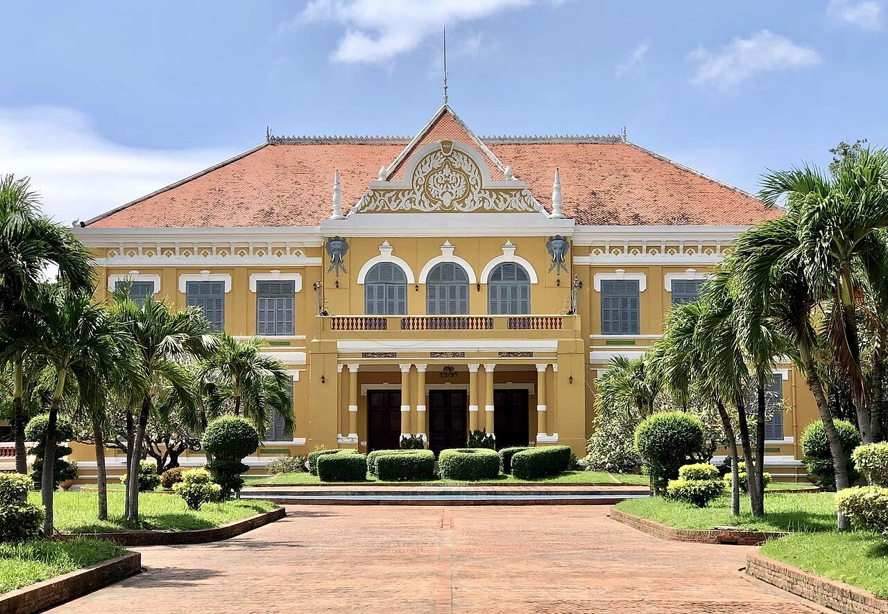

|

|
Founded in the 11th century by the Khmer Empire, Battambang
is the leading rice-producing province of the country. For nearly 100 ye
ars it was a major commercial hub and provincial capital of Siamese provinc
e of Inner Cambodia (1795-1907), though it was always populated by Khmer, w
ith some ethnic Vietnamese, Lao, Thai and Chinese. Battambang remains the h
ub of Cambodia's northwest, connecting the region with Phnom Penh and Thailand.
The city is situated on the Sangkae River, a tranquil, small body of water
that winds its way picturesquely through Battambang Province. As with much
of Cambodia, French Colonial architecture is a notable aspect of the city,
with some of the best-preserved examples in the country. On Oct 31, 2023, B
attambang was one of 55 cities declared to join the UNESCO Creative Cities
Network in the field of Gastronomy as well as crafts and folk art, design,
film, gastronomy, literature, media arts and music.[2] Other cities such as
Kratie, Siem Reap, and Kampot, may follow for the next cycle in 2025 onwards. [3] |
|

|
Battambang was established as an important trading city with around
2,500 residents in the 18th century. The population was cent
red along a single road parallel to the Sangkae River (Stung
Sangkae). In 1795 Siam (modern-day Thailand) annexed much of
north western Cambodia including the current provinces of Ban
teay Meanchey, Battambang, Oddar Meanchey, Pailin, and Siem R
eap into the province of Inner Cambodia. The Siamese ruled Ba
ttambang as a provincial capital through the Thai-speaking Khmer Abhaiwongse family,[4] a branch of the Khmer royal family, which governed for six generations until 1907 when the province was ceded to the French to be reunited with Cambodia as part of the French Indochina colony.
Following colonization by the French, an urban layout was developed whic
h resulted in an enlarged French colonial town. This first attempt
at modernization resulted in well-defined streets laid in a grid p
attern, building of urban structures and three main streets paralle
l to the Sangkae River, and the linking of both banks by the constr
uction of two bridges in 1917. Military and prison facilities were also erected. Nineteen years later, a second urban development plan was implemented with a newly constructed railway linking Battambang to Phnom Penh. The urban structures were extended to the west of the town creating urban hubs oriented around the railway station. The large residential villas and public buildings built during this period of French development significantly changed the landscape of the previously remote city. A subsequent third urban development plan for Battambang involved the north, east and south of the city. This vast undertaking, which required long-term planning to integrate all of the previous work, resulted in a modern provincial capital that was by far the most developed region of Cambodia outside of Phnom Penh.
|